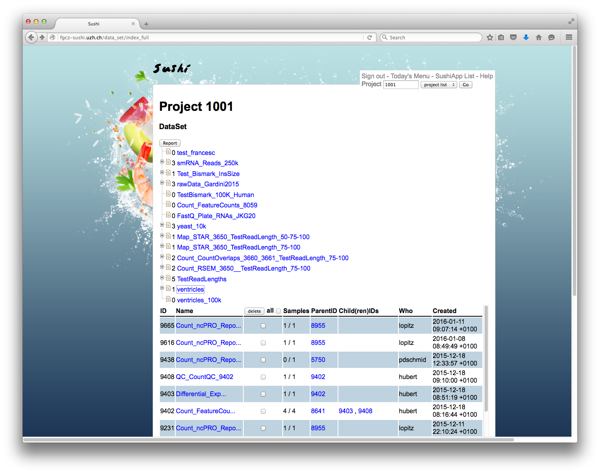
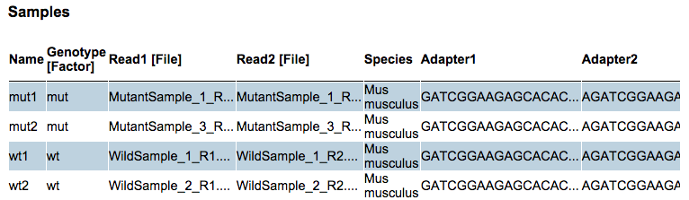

If anything is unclear: [sequencing@fgcz.ethz.ch](mailto:sequencing@fgcz.ethz.ch?subject=SUSHI)
# 1. Getting started
***Process your raw data, without cooking it!***
**SUSHI** can **S**upport **U**sers for **SH**ell script **I**ntegration, defined as a recursive acronym as usual, but someone might say after using it, SUSHI is a Super Ultra Special Hyper Incredible system!! Anyway, it is a sort of pipeline framework developed in Ruby on Rails in order to share useful pipeline scripts. SUSHI provides both web-based front end and command line interface. An instance is now running at [Functional Genomics Center Zurich](http://www.fgcz.ch/) to process the next genration sequence data for over 1000 projects. There have been some similar frameworks published such as [Galaxy](https://usegalaxy.org/), [Chipster](http://chipster.csc.fi/), and [GeneProf](http://www.geneprof.org/GeneProf/), but it is noteworthy that SUSHI is developed in Ruby on Rails, so that installing and updating follows the Ruby on Rails conventions and is quite simple.
You can get started at the demo SUSHI server: [fgcz-sushi-demo.uzh.ch](http://fgcz-sushi-demo.uzh.ch), just go and play around with it, and feel what SUSHI tastes like. Select your project number and then **DataSet** to start analyzing data or viewing analysis results. You can find the basic usage here: [fgcz-sushi.uzh.ch/usage.html](http://fgcz-sushi.uzh.ch/usage.html).
# 2. How to use
## Login
[fgcz-sushi.uzh.ch](http://fgcz-sushi.uzh.ch)
<a href="Images/login_form.png" data-lightbox="login_form" data-title="Login Form">
<img class="shadow_box" width="500px" src="Images/login_form.png" />
</a>
* You need to get an account of [B-Fabric](http://fgcz-bfabric.uzh.ch/) in advance
* The same account and password is valid also in SUSHI
## Top menu
Center
* *DataSet*: see, edit and delete your DataSet
* *Import DataSet*: import a DataSet from .tsv file
* *Check Jobs*: check your submitted jobs and status
* *gStore*: browse result files
* *Help*: See the full list of SUSHI apps, find documentation, and help email
* *Project*: select your project, and click 'GO' button
Top right
* *Sign out*: logout from Sushi
## DataSet Listing
The available DataSets are listed as a tree structure and as a simple table with the newest DataSets at the top.
<a href="Images/datasetListing.png" data-lightbox="login_form" data-title="DataSet Listing">

</a>
The **DataSet** in SUSHI means a set of meta-information regarding processed data, which is simply import/export-able with .tsv (tab-separated-value) formated text file. The column header should the category of meta-information, and the row header should be sample name.
## DataSet Inspection
Click on a DataSet to view the details. The **Samples** table shows the meta-information about the samples and reference to data files and links to browsable reports (if available).
<a href="Images/samples.png" data-lightbox="login_form" data-title="Samples">

</a>
## DataSet Analysis
At the bottom of every DataSet view there is the list of **SUSHI Applications** that are computable on the DataSet.
Select a DataSet by clicking on it. This will bring up the DataSet page where you can analyze the DataSet by selecting any of the available **SUSHI Applications** listed at the bottom. You will be asked to fill in the options and confirm your selections.
<a href="Images/applications.png" data-lightbox="login_form" data-title="Applications">
<img class="shadow_box" width="500px" src="Images/applications.png" />
</a>
## Import DataSet
Normally, DataSet is automatically imported in SUSHI after the sequencing at [FGCZ](http://www.fgcz.ch/). If you would like to import a custom DataSet (.tsv), go to **Import DataSet** from the top menu, select the .tsv file from your computer, put an appropriate DataSet Name, and click **load** button. Note that the same DataSet cannot be imported again.
<!--
## Usacase
In this secion, a typical usage of SUSHI after we get the next generation sequence data is described below.
-->
# 3. SUSHI Applications
[http://fgcz-sushi-demo.uzh.ch/sushi_application](http://fgcz-sushi-demo.uzh.ch/sushi_application)
# 4. Download & Install
Source code
* [github.com/uzh/sushi](github.com/uzh/sushi)
Installation
* [README.rdoc](https://github.com/uzh/sushi/blob/master/README.rdoc)
Demo
* [demo SUSHI](http://fgcz-sushi-demo.uzh.ch)
Presentation at ECCB'14 (The 13th European Conference on Computational Biology)
* [Sushi_Demo_ECCB14.pptx](http://fgcz-sushi.uzh.ch/Sushi_Demo_ECCB14.pptx)
<!--
### FastQCApp
### FastqScreenApp
### STARApp
### RSEMApp
### CountFeatureApp
-->